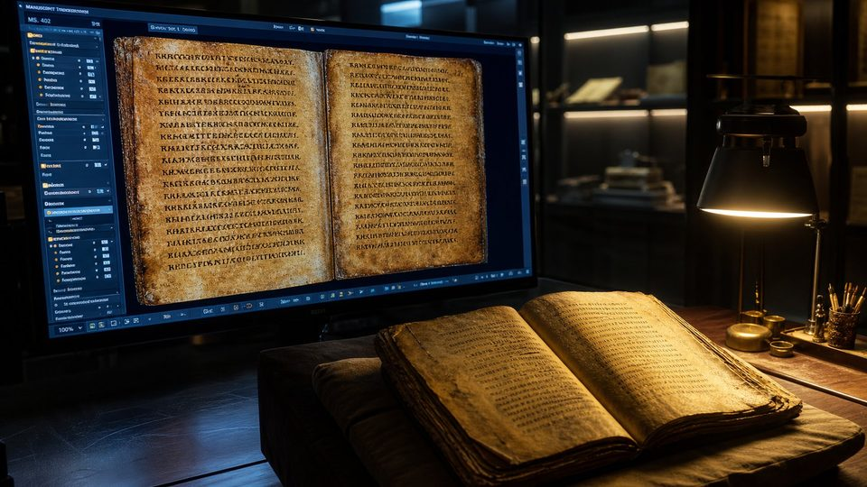

Autour de la visite · Sources
Sources et bibliographie
Les manuscrits originaux consultables en ligne, les ouvrages de référence et les chiffres utilisés dans le musée : tout ce qu'il faut pour vérifier.
Vitrine I · Voir les originaux
33 portes ouvertes sur les manuscrits réels
Musées, bibliothèques et universités ont numérisé les pièces présentées dans VERBUM. Ces liens ouvrent les sites officiels, dans un nouvel onglet ; la plupart sont en anglais.

Vitrine II · Bibliographie
42 ouvrages et articles de référence
Les titres sont donnés dans leur langue de publication, chacun suivi d'une présentation en français.
Bible hébraïque, scribes et massorètes5 références
Emanuel Tov, Textual Criticism of the Hebrew Bible, 3ᵉ éd., Minneapolis, Fortress Press, 2012.
L'ouvrage de référence sur l'histoire du texte de l'Ancien Testament : manuscrits, versions anciennes et méthodes.
Ernst Würthwein, révisé par Alexander A. Fischer, The Text of the Old Testament, 3ᵉ éd., Grand Rapids, Eerdmans, 2014.
Manuel classique, illustré de planches des principaux manuscrits hébreux.
David Noel Freedman (dir.), The Leningrad Codex: A Facsimile Edition, Grand Rapids, Eerdmans, 1998.
Fac-similé intégral du Codex de Leningrad (1008), le plus ancien manuscrit complet de la Bible hébraïque.
Hayim Tawil et Bernard Schneider, Crown of Aleppo, Philadelphie, Jewish Publication Society, 2010.
L'histoire mouvementée du Codex d'Alep, de Tibériade jusqu'à Jérusalem.
Gabriel Barkay, Andrew G. Vaughn, Marilyn J. Lundberg et Bruce Zuckerman, « The Amulets from Ketef Hinnom: A New Edition and Evaluation », Bulletin of the American Schools of Oriental Research 334, 2004, p. 41-71.
La nouvelle édition des rouleaux d'argent, qui confirme leur datation vers 600 av. J.-C.
Les manuscrits de la mer Morte5 références
Katell Berthelot, Thierry Legrand et André Paul (dir.), La Bibliothèque de Qumrân, Paris, Cerf, depuis 2008.
Édition bilingue, en français, des manuscrits de Qumrân, classés selon les livres bibliques.
André Dupont-Sommer, Les Écrits esséniens découverts près de la mer Morte, Paris, Payot, 1959.
Le classique francophone qui a fait connaître les textes de Qumrân au grand public.
James C. VanderKam et Peter W. Flint, The Meaning of the Dead Sea Scrolls, San Francisco, HarperSanFrancisco, 2002.
Synthèse sur la découverte, le contenu et la portée des manuscrits pour le texte biblique.
Martin Abegg Jr., Peter Flint et Eugene Ulrich, The Dead Sea Scrolls Bible, San Francisco, HarperSanFrancisco, 1999.
Traduction des manuscrits bibliques de Qumrân, avec leurs variantes par rapport au texte massorétique.
Geza Vermes, The Complete Dead Sea Scrolls in English, éd. révisée, Londres, Penguin, 2004.
Traduction des textes non bibliques de Qumrân : Règle de la communauté, Rouleau de la Guerre, Rouleau du Temple.
Le Nouveau Testament et ses manuscrits7 références
Léon Vaganay et Christian-Bernard Amphoux, Initiation à la critique textuelle du Nouveau Testament, Paris, Cerf, 1986.
Introduction en français à l'étude des manuscrits du Nouveau Testament.
Bruce M. Metzger et Bart D. Ehrman, The Text of the New Testament: Its Transmission, Corruption, and Restoration, 4ᵉ éd., New York, Oxford University Press, 2005.
Le manuel de référence sur la transmission du texte grec du Nouveau Testament.
Kurt Aland et Barbara Aland, The Text of the New Testament, 2ᵉ éd., Grand Rapids, Eerdmans, 1989.
Présentation des catégories de manuscrits par les responsables de l'édition critique de Münster.
Larry W. Hurtado, The Earliest Christian Artifacts: Manuscripts and Christian Origins, Grand Rapids, Eerdmans, 2006.
Ce que les plus anciens papyrus chrétiens révèlent : préférence pour le codex, abréviations des noms sacrés.
Brent Nongbri, God's Library: The Archaeology of the Earliest Christian Manuscripts, New Haven, Yale University Press, 2018.
Une réévaluation critique de la datation des premiers papyrus, dont P52.
David C. Parker, Codex Sinaiticus: The Story of the World's Oldest Bible, Londres, British Library, 2010.
L'histoire du Codex Sinaïticus, de sa copie au IVᵉ siècle à sa numérisation intégrale.
Université de Glasgow, communiqué d'avril 2026 et édition numérique du Codex H (codexh.arts.gla.ac.uk).
La restitution par imagerie multispectrale de 42 pages perdues des Lettres de Paul (salle 05).
Canon et textes apocryphes4 références
Jean-Pierre Mahé et Paul-Hubert Poirier (dir.), Écrits gnostiques. La bibliothèque de Nag Hammadi, Paris, Gallimard, « Bibliothèque de la Pléiade », 2007.
Traduction française intégrale des codex de Nag Hammadi.
François Bovon et Pierre Geoltrain (dir.), Écrits apocryphes chrétiens, t. I, Paris, Gallimard, « Bibliothèque de la Pléiade », 1997.
Les principaux apocryphes chrétiens traduits et présentés en français.
Marvin Meyer (dir.), The Nag Hammadi Scriptures, New York, HarperOne, 2007.
Édition anglaise de référence des textes de Nag Hammadi, avec introductions.
Bruce M. Metzger, The Canon of the New Testament: Its Origin, Development, and Significance, Oxford, Clarendon Press, 1987.
Comment et selon quels critères les livres du Nouveau Testament ont été reconnus.
Les grandes traductions anciennes4 références
Marguerite Harl, Gilles Dorival et Olivier Munnich, La Bible grecque des Septante, Paris, Cerf, 1988.
La synthèse francophone de référence sur la Septante, du judaïsme hellénistique au christianisme ancien.
Jennifer M. Dines, The Septuagint, Londres, T&T Clark, 2004.
Une introduction claire à l'histoire et aux enjeux de la Bible grecque.
J. N. D. Kelly, Jerome: His Life, Writings, and Controversies, Londres, Duckworth, 1975.
La biographie de référence de Jérôme, traducteur de la Vulgate à Bethléem.
Sebastian P. Brock, The Bible in the Syriac Tradition, 2ᵉ éd., Piscataway, Gorgias Press, 2006.
La Peshitta et les autres versions syriaques, par le grand spécialiste du domaine.
La Bible en français3 références
Pierre-Maurice Bogaert (dir.), Les Bibles en français. Histoire illustrée du Moyen Âge à nos jours, Turnhout, Brepols, 1991.
La synthèse de référence sur les traductions françaises, des psautiers médiévaux aux versions contemporaines (salle 12).
La Bible d'Olivétan, 1535, fac-similé numérique, Bibliothèque de Genève, e-rara (doi:10.3931/e-rara-5690).
L'exemplaire numérisé de la première Bible française traduite sur l'hébreu et le grec.
Philippe Sellier (éd.), La Bible, traduction de Louis-Isaac Lemaistre de Sacy, Paris, Robert Laffont, « Bouquins », 1990.
Réédition de la Bible de Port-Royal, avec une introduction historique.
Imprimerie, Réforme et diffusion4 références
Lucien Febvre et Henri-Jean Martin, L'Apparition du livre, Paris, Albin Michel, 1958.
Le classique français sur la naissance et la diffusion du livre imprimé.
Elizabeth L. Eisenstein, The Printing Revolution in Early Modern Europe, Cambridge, Cambridge University Press, 1983.
Les effets de l'imprimerie sur la culture européenne (traduction française : La Révolution de l'imprimé).
Eric Marshall White, Editio princeps: A History of the Gutenberg Bible, Turnhout, Harvey Miller, 2017.
L'histoire de la Bible à 42 lignes et le recensement de ses exemplaires.
David Daniell, William Tyndale: A Biography, New Haven, Yale University Press, 1994.
La vie du traducteur anglais exécuté en 1536 pour avoir traduit la Bible.
Archéologie et inscriptions7 références
Lawrence J. Mykytiuk, Identifying Biblical Persons in Northwest Semitic Inscriptions of 1200–539 B.C.E., Atlanta, Society of Biblical Literature, 2004.
La méthode pour identifier avec certitude un personnage biblique dans une inscription.
Lawrence J. Mykytiuk, « Archaeology Confirms 50 Real People in the Bible », Biblical Archaeology Review 40/2, 2014.
La liste des personnages de l'Ancien Testament attestés par l'archéologie (salle 09).
Avraham Biran et Joseph Naveh, « An Aramaic Stele Fragment from Tel Dan », Israel Exploration Journal 43, 1993, p. 81-98.
La publication de la stèle de Tel Dan et de la mention de la « maison de David ».
André Lemaire, « “House of David” Restored in Moabite Inscription », Biblical Archaeology Review 20/3, 1994.
La lecture proposée de la « maison de David » sur la stèle de Mésha, toujours débattue.
Irving Finkel (dir.), The Cyrus Cylinder: The Great Persian Edict from Babylon, Londres, I. B. Tauris, 2013.
Le cylindre de Cyrus, sa traduction et son lien avec le retour des exilés.
Bezalel Porten (dir.), The Elephantine Papyri in English, Leyde, Brill, 1996.
Les papyrus d'Éléphantine traduits, dont la lettre mentionnant Johanan et les fils de Sanballat.
Irving Finkel, The Ark Before Noah, Londres, Hodder & Stoughton, 2014.
Les récits mésopotamiens du déluge et les tablettes de la bibliothèque d'Assurbanipal.
Persécutions et survie du texte3 références
Eusèbe de Césarée, Histoire ecclésiastique, livres VIII-X, trad. Gustave Bardy, Paris, Cerf, « Sources chrétiennes » 55, 1958.
Le témoignage d'un contemporain sur la persécution de Dioclétien et les Écritures livrées au feu.
Lactance, De la mort des persécuteurs, trad. Jacques Moreau, Paris, Cerf, « Sources chrétiennes » 39, 1954.
Le récit de l'édit de 303 par un témoin de la cour impériale.
Frère André, avec John et Elizabeth Sherrill, God's Smuggler, 1967 (traduction française : Le Contrebandier de Dieu).
Le récit du passage de Bibles derrière le rideau de fer (salle 10).
Vitrine III · Chiffres et statistiques
D'où viennent les chiffres du musée
Les chiffres sont arrondis et datés. Quand plusieurs estimations existent, nous donnons un ordre de grandeur et nous l'indiquons.
- Traductions de la Bible (septembre 2026).7 394 langues dans le monde ; Bible complète dans 807 langues, Nouveau Testament dans 1 844, portions dans 1 519.Wycliffe Bible Translators
- Diffusion en 2025.148,3 millions de publications bibliques imprimées, dont 22,4 millions de Bibles complètes ; 32,2 milliards de chapitres consultés en ligne.Alliance biblique universelle
- Manuscrits grecs du Nouveau Testament.Plus de 5 800 manuscrits grecs catalogués : papyrus, onciaux, minuscules et lectionnaires.INTF, Université de Münster
- Manuscrits de la mer Morte.Environ 900 manuscrits retrouvés dans les onze grottes de Qumrân, dont plus de 200 copies de livres bibliques.Bibliothèque numérique Leon Levy
- Le projet Perle (1981).Un million de Bibles chinoises débarquées en une nuit, le 18 juin 1981, sur une plage près de Shantou.Portes Ouvertes
- Le Codex H (2026).42 pages perdues des Lettres de Paul, déjà connues par ailleurs, restituées par imagerie multispectrale.Université de Glasgow
Vitrine IV · Crédits
Images, voix, polices et cartes
- Illustrations.124 reconstitutions photoréalistes générées numériquement (JPG 1920 × 1080 et 960 × 540), signalées « Illustration » ou « Reconstitution ». Ce ne sont pas des documents d'archive.
- Narrations.30 narrations en français réalisées par synthèse vocale, avec une légère réverbération (MP3, 192 kb/s).
- Textes anciens.Texte massorétique (Codex de Leningrad), manuscrits de Qumrân et éditions critiques du Nouveau Testament ; traductions françaises établies pour le musée.
- Polices.Cormorant Garamond, EB Garamond, Cinzel Decorative, Cinzel, Inter, Noto Sans Hebrew, Frank Ruhl Libre, Noto Sans Phoenician, Noto Sans Syriac et UnifrakturMaguntia, sous licence SIL Open Font License 1.1.
- Cartes.Contours Natural Earth (domaine public).
- Institutions citées.Les liens vers les musées, bibliothèques et universités n'impliquent aucun partenariat : VERBUM est un projet indépendant.